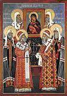

The celebration of a special day to honor Saints Peter, Alexis, Jonah the Metropolitans and Wonderworkers of All Russia was established by Patriarch Job on October 5, 1596. In 1875, St. Innocent, Metropolitan of Moscow (March 31 and October 6) proposed that St. Philip be included with the others. St. Hermogenes was added only in the year 1913.
By celebrating these hierarchs on a common day, the Church offers each of them equal honor, as heavenly protectors of the city of Moscow and prayerful intercessors for Russia.
Information about the Lives of these holy Hierarchs is found under the dates of their commemoration: St. Peter (December 21 and August 24), St. Alexis (February 12 and May 20), St. Jonah (March 31, May 27, and June 15), St. Philip (January 9 and July 3 ), St. Hermogenes (February 17 and May 12 ).